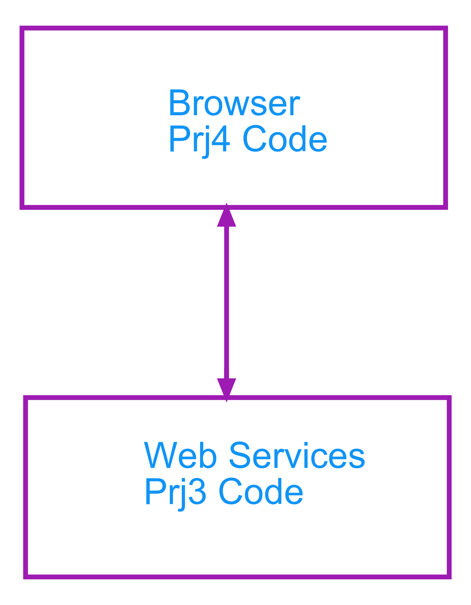
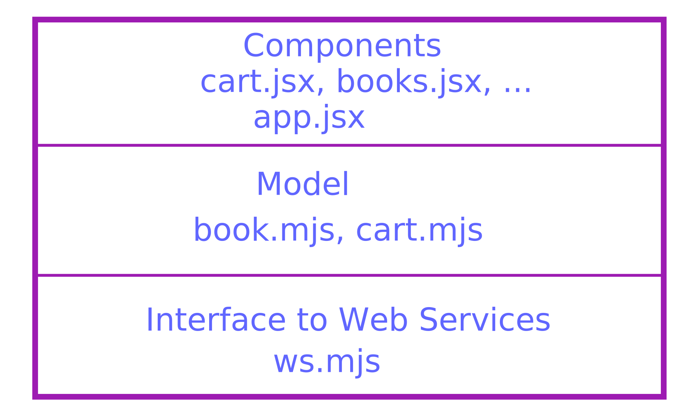
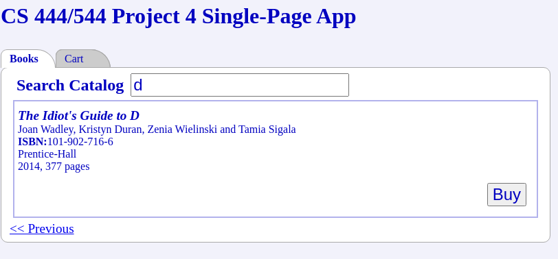
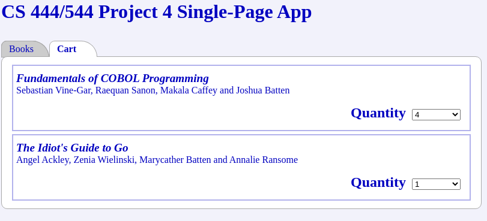

Project 4
Due: Aug 6 by 11:59p
No Late Submissions
Important Reminder: As per the course Academic Honesty Statement, cheating of any kind will minimally result in your letter grade for the entire course being reduced by one level.
This document first describes the aims of this project followed by a brief overview. It then lists the requirements as explicitly as possible. This is followed by a log which should help you understand the requirements. It describes the files with which you have been provided. Finally, it provides some hints as to how the project requirements can be met.
[Some links may not work from the PDF version of this document. All links should work from the HTML version.]
Aims
The aims of this project are as follows:
To expose you to reactjs.
To make you implement a Single Page App.
To use web services.
Overview
In this project, you will use the web services from your earlier Project 3 to implement a single-page-app which allows you to:
Search a read-only book catalog.
Add search results to a shopping cart.
The following figure shows how this project will interact with your earlier project:
The operation of the code is best illustrated by playing with a running version of the code Note that this is accessible only from inside the department firewall and requires the browser to allow mixed content (set up in Chrome by using the Site Settings menu accessed by clicking on the security icon in the browser's URL address bar).
A lot of code has been provided for this project. The code is organized in layers so that code at higher levels depends on code at lower levels, but not vice-versa:
The lowest layer uses axios to interface with the project 3 web services.
The next layer up uses the web service layer to build immutable Book and Cart model objects.
The topmost layer uses reactjs to build components which are displayed in the browser. The outermost component is provided by app.jsx which displays the overall app; it uses tab.jsx (not shown in the figure) to display two tabs for searching the book catalog and viewing/modifying the current shopping cart. Some of the main components are books.jsx responsible for displaying the book search and cart.jsx responsible for displaying the cart.
The app component provides a global context via which the components communicate.
It is responsible for maintaining the shopping cart.
It paints the books and cart components in separate tabs.
The books component uses an app.buy() callback to add an item to the shopping cart.
The cart component uses an app.update() callback to update the contents of the cart.
Requirements
You must push a submit/prj4-sol directory to your github repository such that typing npm ci followed by npm run build:dev and npm start within that directory starts a server. Accessing that server using a browser should display the app using the project 3 web services running at <http://zdu.binghamton.edu:2345> (accessible only from inside the department firewall with browser which allows mixed content). If web services are running at a different URL, then the prj4-setup.html page should be used to provide that alternate URL.
The application should display two tabs:
- Books Search
The contents of this tab is exemplified by the following image:
This tab should display a text input field. Blurring that field or typing an enter key into it should do a authorsTitleSearch of the books catalog for the contents of the field. This search should not be performed if the contents of the field are empty or unchanged from its previous contents.
The results containing the books which match the search should be displayed below the text input field.
All the information for a matching book should be shown.
Each author must be display in the form as firstName lastName. Multiple authors must be separated by , except for the last author which must be preceeded the word and.
There should be a Buy button associated with each matching book. Clicking on this button should add one unit of that book to the current shopping cart. If the shopping cart already contains a line-item for that book, then the count associated with that line-item should be incremented by one.
If applicable, Next and Previous controls should be displayed after the results. Clicking on these controls should allow scrolling through all the results matching the search.
- Shopping Cart
The contents of this tab is exemplified by the following image:
This tab should display the contents of the current shopping cart. The display should consist of a sequence of line-items containing a brief description of the book and the quantity for that book:
The description provided for a book should only include the title and authors information.
The quantity should be displayed using a select box. The select box should allow changing the quantity to a value between 0 and 9 (choosing 0 should effectively delete that book from the shopping cart).
The shopping cart should have the following additional properties:
The shopping cart should persist over browser sessions; i.e. it should survive browser shutdowns.
There is no requirement that the same shopping cart be available across different browsers.
The application should not crash or hang if the shopping cart is deleted from the underlying database. When this is detected, the operation being attempted should succeed, albeit on a new empty shopping cart.
[The reason for this requirement is to give me the flexibility to purge the database if I find that it contains too many student shopping carts. Nevertheless, this is also a useful requirement for a real e-commerce web site to cope with unexpected back-end behavior; a customer is more likely to dismiss a suddenly empty shopping cart as a glitch rather than a crashed or hung application.]
The project has the following negative requirements:
There is no requirement on the styling of the content.
[If you follow the suggestions provided in the Hints, you should obtain reasonable styling using the provided style sheet.]
The application is simple enough that user-errors are impossible. If any non-user errors (like network errors) occur, it is sufficient for the application to report the error on the browser's console, even though the application may crash or hang.
[Such error handling would be unacceptable for a real application.]
Packaging
We will be using webpack to package all our code together and babeljs to compile React's jsx components into standard JavaScript.
The babel-loader is used to interface webpack to babel.
Babel is configured to use the react preset.
Webpack is run from the command-line using webpack-cli.
The webpack-dev-server is used to set up a server to serve up the app. It provides hot module replacement to obtain a pleasant development experience.
Note that webpack uses the default <prj4-sol/src/index.js> src/index.js as its entry-point and produces its output bundle in the default dist directory. Note that the webpack-dev-server produces the bundle in its memory instead of in the filesystem.
Provided Files
The prj4-sol directory contains a start for your project. It contains the following files:
- React components in components
This includes books.jsx and cart.jsx skeleton files to which you will need to add code. It also includes the file app.jsx file which provides the outermost application container. It contains callbacks which can be called by your books and cart components.
- Library files in src/lib
These include ws.mjs interface to web services, as well as the files book.mjs and cart.mjs which extract Book and Cart models from the web services,
Note that the Cart model contains more information than available from the raw cart web service; specifically, each line-item within the cart is enhanced with a Book model object containing all the information about the corresponding book.
The lib directory also includes a cache.mjs to allow caching book information within the browser. This is a skeleton file which you will need to trivially complete.
- Startup files
The index.js file serves as an entry point for webpack. It merely defers to root.mjs which is used to inject the app into the HTML page.
- Static files in statics
These include:
The HTML file index.html which hosts the entire application
The HTML file prj4-setup.html which can be used to provide an alternate URL for the web services.
The stylesheet tab.css which is used to implement tabs without using JavaScript.
The stylesheet style.css which sets up reasonable styling for the application.
- package.json
This is set up with all the dependencies for your project, including the webpack development dependencies and the react and axios runtime dependencies.
It includes the following scripts which can be run using npm run:
- start
Used for starting the webpack-dev-server.
- build:dev, build:prod
Used for building versions for application for development and production in the dist directory. Note that the development version includes source maps whereas the production version generates minified and obfuscated code.
In addition to building the webpack bundle, running these scripts copies HTML and css files from the src/statics directory to the dist directory.
- clean
Used for removing the dist directory.
- Configuration Files
The configuration file webpack.config.js for webpack and the babelrc dot-file for babel.
- README
A README file which must be submitted along with your project. It contains an initial header which you must complete (replace the dummy entries with your name, B-number and email address at which you would like to receive project-related email). After the header you may include any content which you would like read during the grading of your project.
The files you will definitely need to modify are books.jsx, cart.jsx, cache.mjs and the README. You should not need to change the other files but are not forbidden from doing so.
Hints
The following points are worth noting:
The application is required to persist shopping carts across browser sessions. Fortunately, the provided RESTful web services persist the contents of each shopping cart at a distinct URL. So it is sufficient for the browser to merely persist the web service URL for a shopping cart across browser sessions. Possibilities include:
Non-session cookies. This has the advantage that the cookie could also be sent to the server, but that is not necessary for this project.
Local Storage using the browser's window.localStorage API.
[Note that by definition, window.sessionStorage would not work.]
The provided code uses the second alternative, primarily because of the browser provided cookie API (based on document.cookie) is slightly messy.
The web services which return a cart do not return the actual details of books but only links to them. Hence displaying the actual contents of the shopping cart conceptually requires separate web service calls to obtain the details of each separate book in the cart.
These separate calls can be avoided by caching the details of each shopping cart book in the browser. The cache uses the browser's window.sessionStorage, though window.localStorage would also work.
[Note that this caching is only in order to obtain better performance. This is unlike the storing of the cache ID in window.localStorage, which is necessary for correctness in order to fulfil the requirements].
The app component maintains the currently selected tab as part of its state. The state also contains the current contents of the shopping cart as an instance of the cart model.
The app component is sent down to child components via props as an app property. It can be used for the following purposes:
To access an instance of the ws.mjs> web service client using app.ws.
To allow switching to a specific tab using either the callback app.select('books') or the callback app.select('cart').
To purchase a book from search results using the app.buy() callback.
To update the quantity of a book in the shopping cart using the app.update() callback.
Since for and class are reserved within certain contexts in JavaScript, react allows using htmlFor and className instead as attributes for JSX elements corresponding to HTML elements.
A JSX literal in your code must consist of only a single XML-element at the top-level. For example, the following is legal:
<ul> <li>...</li> <li>...</li> <li>...</li> </ul>
but the following is not:
<li>...</li> <li>...</li> <li>...</li>
If you need multiple elements as a top-level literal, then they must be within a top-level list. However, each element in a JSX list literal must have a distinct key attribute:
[ <li key="0">...</li>, <li key="1">...</li>, <li key="2">...</li>, ]Note that the key's can be any String as long as all the key values within a single list are distinct,
It is assumed that you know how to use the excellent debuggers available within modern browsers.
The following steps are not prescriptive in that you may choose to ignore them as long as you meet all project requirements.
Read the project requirements thoroughly. Look at the running application to make sure you understand the necessary behavior (your browser allow mixed content and must be running inside the department firewall). Review the material covered in class including reactjs and the users-app example.
Decide whether you want to use your solution to Project 3, or the class solution. If using the former, please review the Project 3 Solution README for the minor changes made to the solution to make it suitable for this project and apply those same changes to your solution (note the Project 3 solution links will work only once the solution is published after the late submission deadline).
Set up your prj4-sol branch and submit/prj4-sol as per your previous projects. You will not need to initialize the project using npm init as a package.json is already being provided. What you will need to do is install all necessary modules using npm install.
You should be able to run the project after a npm run build:dev (which copies the static files into the dist directory, followed by an npm start comand.
If you point your browser to the server's port (usually <http://localhost:8080> if running on your VM) you should see the app outline without any of the required functionality.
Complete the trivial cache.mjs. This class encapsulates the choice of storage between window.sessionStorage and window.localStorage. The provided code defaults to using window.sessionStorage, but if implemented correctly, the caller can easily switch in window.localStorage by provided it as an argument to the provided constructor.
It is important to note that the storage API only allows storing key-value pairs where both the keys and values must be Strings. Hence before storing a book in the store, you should serialize it using JSON.stringify() and when reading from the store you should deserialize it using JSON.parse().
Start work on the books.jsx module. The provided code provides skeletons for Book and Books components as these are exported by the module (the former is a named export whereas the latter is a default export).
The Book component is used for displaying book information in both the search results as well as the shopping cart.
The Books component will use sub-components to display the search form, search results, and previous/next controls. The current search results will be maintained within its state. Note that the its props are set up with an app property.
To start with, set up the Books component to display the search form.
Implement a stateful SearchForm component. Set it up with an app and books property where the latter refers to the raw object instance of the Books component; pass the books prop down from Books to SearchForm, the same way the app component passes itself down to Books.
To start with, have the SearchForm component simply render() the form. In order to hook into the provided stylesheet, you can render it along the following lines:
<form className="search"> <label htmlFor="search">Search Catalog</label> <input name="authorsTitleSearch" id="search"/> </form>
Add an onBlur() handler for the input textbox field to the SearchForm; make sure to bind() this so that this within the handler refers to the component and not to the DOM element. Since the handler is set up on the input textbox, the target property of the event argument to the handler will refer to the textbox. You can access its value using the value property. Once you have the value, simply use app.ws.findBooks() to do the search. Test by simply logging the output of the web service call.
Set up code to ensure that you perform the search only when the provided authorsDetailSearch is non-empty and not equal to its previous value.
Add an onSubmit() handler for the <form> within the SearchForm component. Since we will be handling the submit entirely within our own code, prevent the default action of submitting to the server by using event.preventDefault(). Use Element.querySelector() to access the <input> element nested within the <form>-element target of the submit event. Once you have the <input>, the handler is pretty much identical to that of the onBlur() handler.
Since the code for the onSubmit() and onBlur() are very similar, use the extract method pattern to pull out the common code.
Set up a callback handler within the Books component to record search results within its state. Within your SearchForm component, call this callback via this.props.books passing in the search results.
In order to display your results, you will need a non-stateful Book component to display the information associated with a book. It should accept at least two properties:
- book
An object specifying a book. Note that since JavaScript uses duck typing, the book can be any object as long as it supports all the book properties defined for the earlier projects. In particular, it can be a raw search result or it can be a book model object.
- full
If specified as
truethen all book fields should be rendered. If specified asfalse, then only the title and authors fields should be rendered. This prop allows the same Book component to be reused for both displaying search results as well as shopping cart line-items.
In order to hook into the provided stylesheet, a full book should be rendered as follows:
<div className="book"> <span className="title">{title}</span> <span className="authors">{authors}</span> <span className="isbn"><label>ISBN:</label>{isbn}</span> <span className="publisher">{publisher}</span> <span key="year" className="year">{year}, </span> <span className="pages">{pages} pages</span> </div>
Make sure to flip the author first and last names and display them as per the requirements.
Create a non-stateful Results component to display the search results. It should take two props: the app and the search results. Add an instance of this component to your Books component passing in the app and the search results (from that recorded within the state in the previous step). Set up the rendering to render the books in the search results using your previously built Book component.
Add a Buy button to each book search result. In order to hook into the provided stylesheet, you can render it along the following lines:
<div className="result" key={i}> <Book book={bookSearchResult} full={true}/> <div className="buy"><button>Buy</button></div> </div>
Set up the onClick handler within for the Buy button to call app.buy(bookSearchResult). After buying a book, verify that the app.state.cart contains the book.
Start implementing the cart component in the provided cart.jsx skeleton file. Note that the app is set up to render the cart, passing in the app and items props (the latter represents the line-items of the shopping cart where each line-item contains not only the sku and nUnits but also all the information about the corresponding book). The cart component need only set up its render() to map each line-item into a LineItem component which you will implement next.
Add a stateful LineItem component to your cart.jsx file. It should take as props the app and an item representing the line-item. It should maintain nUnits within its state initialized to props.item.nUnits.
In order to hook into the provided stylesheet, you can render it along the following lines:
<div className="line-item"> <Book book={book} full={false}/> <div className="nUnits"><label>Quantity</label>{select}</div> </div>
where {book} is the book contained within the line-item and {select} is a select box set up to include the options 0 (delete) to 9 with its value property set to nUnits of the line-item.
Add an onChange handler to the Quantity select box so that any change in its value changes the value of the nUnits in the state, as well as calls app.update() passing in the line-item book and the new nUnits.
Return to your books.jsx to set up scrolling through the search results. Note that the code for scrolling for next and prev are very similar and can be factored out by having two instances of the same component. This step is not spelt out in detail as you should now have enough experience with react to do it yourself.
However, if you wish to hook into the provided stylesheet, you can render it along the following lines:
<span className="scroll"> <a href="#" rel={dir}>{SCROLLS[dir]}</a> </span>
where dir is either prev or next. Note that the scrolling should occur when the <a> element is clicked; once again, the default browser click behavior should be turned off using event.preventDefault().
Iterate until you meet all requirements.
It is a good idea to commit and push your project periodically whenever you have made significant changes. When complete, please follow the procedure given in the git setup document to merge your prj1-sol branch into your master branch and submit your project to the grader via github.